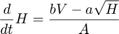
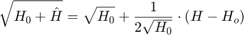
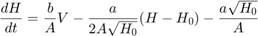
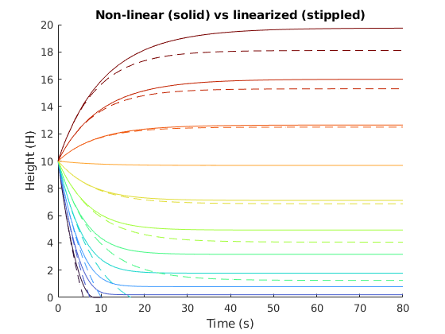
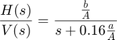

Differential equation describing the tank water level:

This ode is non-linear in \sqrt{H}. However, we can approximate this by a first order taylor expansion/linearization:

With this linearization we arrive at the linear ODE:

For fun, we can simulate the non-linear and linearized differential equations to inspect the accuracy To do this I use matlab's ode45 which can simulate most ordinary differential equations The non-linear and linear ODE's are defined in tank_system_linear.m and tank_system_nonlinear.m, respectively.
A = 24; b = 8; a = 18; %water tank parameters timespan = [0, 80]; %simulaion interval H0 = 10; %initial level colormap = turbo(11); % Solve the and plot the ODE's figure; hold on; for V = 0:10 [t, H] = ode45(@(t, H) tank_system_nonlinear(t, H, a, b, A, V), timespan, H0); plot(t, H, 'Color', colormap(V+1, :)); [t, H] = ode45(@(t, H) tank_system_linear(t, H, a, b, A, V, H0), timespan, H0); plot(t, H,'--','Color', colormap(V+1, :)) end xlim(timespan); ylim([0,20]); xlabel('Time (s)'); ylabel('Height (H)'); title('Non-linear (solid) vs linearized (stippled)');
Warning: Imaginary parts of complex X and/or Y arguments ignored.
The transfer function is determined by taking the laplace transform of the homogeneous linear ODE:

close; %close previous plot s = tf('s'); A = 24; b = 8; a = 18; %water tank parameters tf_linear = (b/A)/(s+0.16*a/A); %defining transfer function as given in the task step(tf_linear)